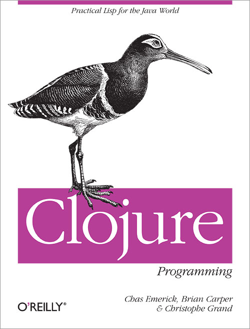
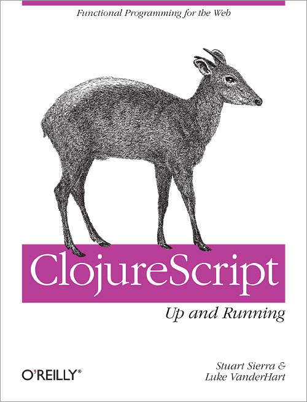

<!DOCTYPE html>
<head>
  <meta charset="utf-8">  
  <title>λλλλλλλ</title>
  <link rel="stylesheet" href="reveal/css/reveal.css">
  <link rel="stylesheet" href="reveal/css/theme/moon.css" id="theme">
  <!-- <link rel="stylesheet" href="reveal/css/print/pdf.css"> -->

  <meta name="apple-mobile-web-app-capable" content="yes" />
	<meta name="apple-mobile-web-app-status-bar-style" content="black-translucent" />
	<meta name="viewport" content="width=device-width, initial-scale=1.0">

  <!-- For syntax highlighting reveal/-->
  <link rel="stylesheet" href="reveal/lib/css/zenburn.css">
</head>

<body>

  <div class="reveal">
    <div class="slides">

      <section data-markdown data-state="highlight"><script type="text/template">

          # Fun JS January

          

      </script></section>

      <section data-markdown data-state="highlight"><script type="text/template">

          # Agenda
          
          ## Functional Front-end: ClojureScript - Thomas G. Kristensen
          <br/>
          ## Dojo - ClojureScript

      </script></section>

      <section data-markdown data-state="highlight"><script type="text/template">

          # Dojo
          
          ### Implement a TODO app from skeleton in repo
          <br/>
          ### David Nolen's LightTable CLJS Tutorial
          <br/>
          ### Exercises on 4clojure / CLJS Koans

      </script></section>
      
      <section data-markdown data-state="highlight"><script type="text/template">

          # Dojo
          
          ## 80 minutes of hackery
          ## Everybody codes!
          ## Time per person: 80 / N
          <br/>
          ## Share at the end

      </script></section>

      <section data-markdown data-state="highlight"><script type="text/template">

          # Repo

          ## [funjsldn/funjs-jan-dojo](https://github.com/funjsldn/funjs-jan-dojo)

      </script></section>

      <section data-markdown data-state="highlight"><script type="text/template">

          # Discounts!

          
          

      </script></section>
    </div>
  </div>

  <script src="reveal/lib/js/head.min.js"></script>
  <script src="reveal/js/reveal.min.js"></script>
  <script>
    Reveal.initialize({

    // Display controls in the bottom right corner
    controls: false,

    // Display a presentation progress bar
    progress: true,

    // Push each slide change to the browser history
    history: true,

    // Enable keyboard shortcuts for navigation
    keyboard: true,

    // Enable the slide overview mode
    overview: true,

    // Vertical centering of slides
    center: false,

    // Loop the presentation
    loop: false,

    // Change the presentation direction to be RTL
    rtl: false,

    // Number of milliseconds between automatically proceeding to the
    // next slide, disabled when set to 0, this value can be overwritten
    // by using a data-autoslide attribute on your slides
    autoSlide: 0,

    // Enable slide navigation via mouse wheel
    mouseWheel: false,

    // Apply a 3D roll to links on hover
    rollingLinks: false,

    // Transition style
    transition: 'linear', // default/cube/page/concave/zoom/linear/fade/none

    dependencies: [
    // Cross-browser shim that fully implements classList - https://github.com/eligrey/classList.js/
    { src: 'reveal/lib/js/classList.js', condition: function() { return !document.body.classList; } },

    // Interreveal/pret Markdown in <section> elements
      { src: 'reveal/plugin/markdown/showdown.js', condition: function() { return !!document.querySelector( '[data-markdown]' ); } },
      { src: 'reveal/plugin/markdown/markdown.js', condition: function() { return !!document.querySelector( '[data-markdown]' ); } },

      // Syntareveal/x highlight for <code> elements
        { src: 'reveal/plugin/highlight/highlight.js', async: true, callback: function() { hljs.initHighlightingOnLoad(); } },

        // Zoom reveal/in and out with Alt+click
        { src: 'reveal/plugin/zoom-js/zoom.js', async: true, condition: function() { return !!document.body.classList; } },

        // Speakreveal/er notes
        { src: 'reveal/plugin/notes/notes.js', async: true, condition: function() { return !!document.body.classList; } },

        // Remotreveal/e control your reveal.js presentation using a touch device
        // { src: 'reveal/plugin/remotes/remotes.js', async: true, condition: function() { return !!document.body.classList; } }
        ]

        });
        Reveal.addEventListener( 'highlight', function() {
        console.log("state")
        }, false );
        
  </script>
</body>
